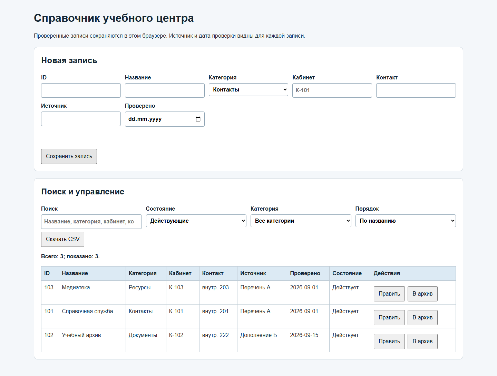
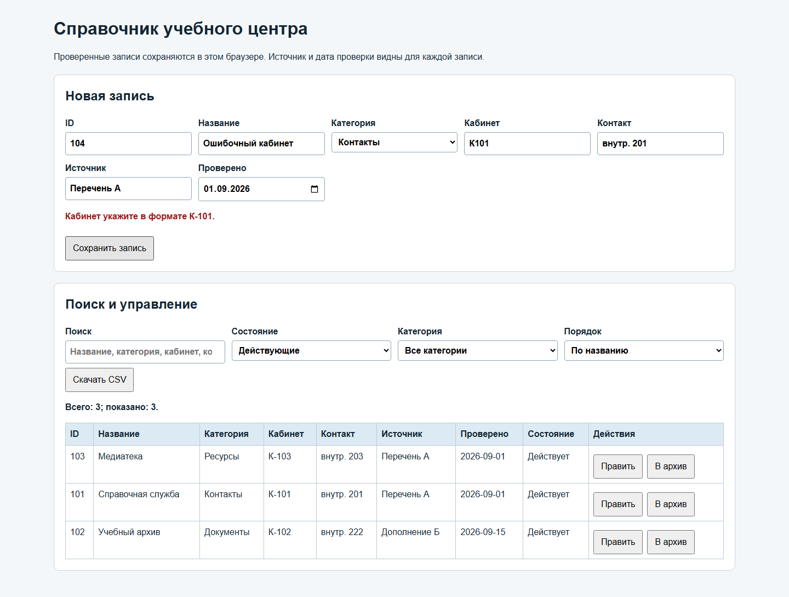
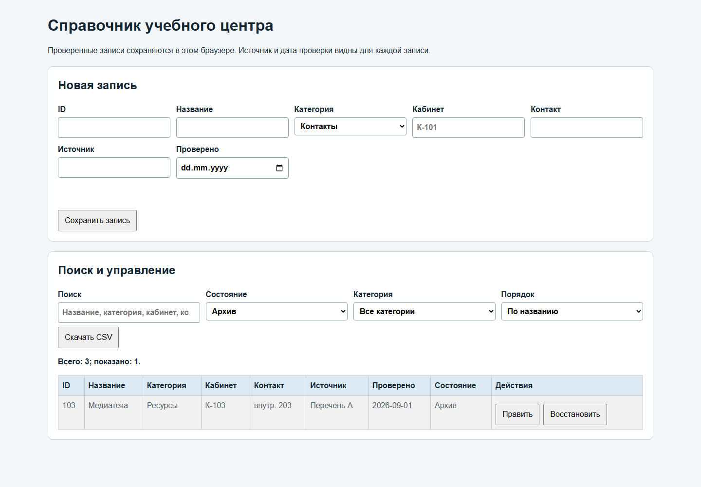

Справочная служба учебного центра
Отдельный полный разбор: сверка источников, реализация справочника, проверка данных, поиск, архив, сохранение и экспорт.
Учебный маршрут / 2026-2027
Самостоятельный проект электронного справочника · 30 предметных областей
Учебный комплектОтдельный полный разбор: сверка источников, реализация справочника, проверка данных, поиск, архив, сохранение и экспорт.
Скачать неполную заготовку электронного справочника (ZIP)
Начните с неё: дополните интерфейс и функции для своей предметной области.
Скачать полный демонстрационный справочник для сверки (ZIP)
Сверяйте устройство после самостоятельной разработки; это решение другой области.
Справочный материал поступает из нескольких внутренних перечней. Запись можно показать пользователю только после проверки названия, категории, кабинета, контакта, источника и даты. В демонстрации используется вымышленный учебный центр; адреса и контакты условные.
Перечень А от 01.09.2026: 101 — Справочная служба, Контакты, К-101, внутр. 201; 102 — Учебный архив, Документы, К-102, внутр. 202; 103 — Медиатека, Ресурсы, К-103, внутр. 203. Дополнение Б от 15.09.2026 уточняет контакт Учебного архива: внутр. 222. Старая заметка от 20.08.2026 предлагает для Справочной службы К-009. Более поздний Перечень А имеет приоритет; по Учебному архиву используйте новое документированное уточнение. В каждой записи укажите источник принятого значения.
Составьте таблицу: ID, нормализованное название, категория, кабинет, контакт, источник, дата проверки, состояние. Зафиксируйте, почему К-009 отклонён и почему контакт архива изменён. Это отделяет ошибку исходных сведений от ошибки программы.
Скачайте неполную заготовку Directory-starter.zip и распакуйте в рабочую папку. В распакованном архиве откройте папку v2/starter: там находятся index.html, style.css и app.js. Методичка ниже последовательно достраивает её для демонстрационной области. Полный Directory-demo-complete.zip открывайте для сверки после собственного воспроизведения и проверки; его исходники находятся в v2/demo.
В редакторе кода выберите «Файл → Открыть папку» и укажите папку v2/starter внутри распакованной заготовки. В панели файлов откройте index.html. Выберите весь текст файла сочетанием Ctrl+A и заменяйте его фрагментами ниже по порядку. После каждого законченного раздела сохраните изменения сочетанием Ctrl+S. Имена id нужны app.js для поиска элементов; при переименовании меняйте оба файла.
Начните с кодировки UTF-8, заголовка вкладки и подключения style.css. Это позволяет браузеру правильно показать русские подписи и применить стили.
<!doctype html> <html lang="ru"> <head> <meta charset="utf-8"> <meta name="viewport" content="width=device-width, initial-scale=1"> <title>Справочник учебного центра — демонстрация</title> <link rel="stylesheet" href="style.css"> </head>
Добавьте основной контейнер, название и пояснение для пользователя. Пока форма и таблица не добавлены, на странице будет только заголовок.
<body>
<main>
<h1>Справочник учебного центра</h1>
<p>Проверенные записи сохраняются в этом браузере. Источник и дата проверки видны для каждой записи.</p>Добавьте форму после заголовка. Поля соответствуют модели записи; `required` помогает не отправить пустое поле, но бизнес-проверки будут в app.js. В демонстрации дополнительное поле — кабинет.
<form id="entry-form">
<h2 id="form-title">Новая запись</h2>
<div class="fields">
<label>ID <input id="entry-id" required inputmode="numeric" pattern="[0-9]+"></label>
<label>Название <input id="entry-name" required maxlength="80"></label>
<label>Категория <select id="entry-category"><option>Контакты</option><option>Документы</option><option>Ресурсы</option></select></label>
<label>Кабинет <input id="entry-detail" required placeholder="К-101"></label>
<label>Контакт <input id="entry-contact" required></label>
<label>Источник <input id="entry-source" required></label>
<label>Проверено <input id="entry-checked" required type="date"></label>
</div>
<p id="form-error" class="error" role="alert"></p>
<button type="submit">Сохранить запись</button>
<button id="cancel" type="button" hidden>Отменить правку</button>
</form>Добавьте поиск, два фильтра, сортировку, кнопку выгрузки и таблицу. `tbody` пуст: строки создаёт код. Кнопки действий появятся в последнем столбце при отрисовке.
<section aria-label="Поиск и выгрузка">
<h2>Поиск и управление</h2>
<div class="controls">
<label>Поиск <input id="query" type="search" placeholder="Название, категория, кабинет, контакт"></label>
<label>Состояние <select id="status-filter"><option value="active">Действующие</option><option value="archived">Архив</option><option value="all">Все</option></select></label>
<label>Категория <select id="category-filter"><option value="all">Все категории</option><option>Контакты</option><option>Документы</option><option>Ресурсы</option></select></label>
<label>Порядок <select id="sort"><option value="name">По названию</option><option value="checked">По дате проверки</option></select></label>
</div>
<button id="export" type="button">Скачать CSV</button>
<p id="summary" role="status"></p>
<div class="table-wrap"><table><thead><tr><th>ID</th><th>Название</th><th>Категория</th><th>Кабинет</th><th>Контакт</th><th>Источник</th><th>Проверено</th><th>Состояние</th><th>Действия</th></tr></thead><tbody id="rows"></tbody></table></div>
</section>
</main>Скрипт расположен после интерфейса; поэтому querySelector получает уже созданные элементы. Обновите страницу в браузере: видны поля и пустая таблица.
<script src="app.js"></script> </body> </html>
В Explorer откройте style.css и замените содержимое следующими фрагментами. Сетка перестраивается по ширине окна; у таблицы есть горизонтальная прокрутка.
* { box-sizing: border-box; }
body { margin: 0; background: #f4f7fa; color: #152633; font: 16px/1.5 Arial, sans-serif; }
main { max-width: 1300px; margin: auto; padding: 28px; }
h1 { margin: 0 0 12px; }
form, section { background: #fff; border: 1px solid #c8d3db; border-radius: 10px; padding: 20px; margin: 20px 0; }
h2 { margin-top: 0; }.fields, .controls { display: grid; grid-template-columns: repeat(auto-fit, minmax(200px, 1fr)); gap: 12px; }
label { display: block; font-weight: 600; }
input, select { display: block; width: 100%; padding: 8px; margin-top: 4px; font: inherit; border: 1px solid #8da3b3; border-radius: 4px; }
button { padding: 8px 12px; margin: 8px 8px 0 0; font: inherit; cursor: pointer; }
button:focus-visible, input:focus-visible, select:focus-visible { outline: 3px solid #176fa4; outline-offset: 2px; }.error { color: #a31919; font-weight: 600; min-height: 1.5em; }
.table-wrap { overflow-x: auto; }table { width: 100%; border-collapse: collapse; min-width: 980px; }
th, td { border: 1px solid #becbd5; padding: 8px; text-align: left; vertical-align: top; }
th { background: #dceaf4; }
tr.archived { background: #f1f1f1; color: #52606b; }
#summary { font-weight: 600; }@media (max-width: 600px) { main { padding: 12px; } form, section { padding: 14px; } }Сохраните style.css. Двойным щелчком откройте index.html из Проводника и обновите страницу Ctrl+R. Проверьте форму и столбцы. Если стили отсутствуют, убедитесь, что style.css лежит рядом с index.html.
Откройте app.js из Explorer и замените комментарий. Список columns задаёт одновременно порядок полей для таблицы и CSV. Массив records хранит записи; editingId показывает, создаётся или меняется запись.
const STORAGE_KEY = "directory-demo-v2";
const CATEGORIES = ["Контакты", "Документы", "Ресурсы"];
const columns = ["id", "name", "category", "detail", "contact", "source", "checked", "status"];
const form = document.querySelector("#entry-form");
const rowsElement = document.querySelector("#rows");
const errorElement = document.querySelector("#form-error");
let records = loadRecords();
let editingId = null;
localStorage сохраняет текст между открытиями этой страницы в том же браузере. loadRecords разбирает JSON; при повреждённом содержимом возвращает пустой список. saveRecords вызывается после каждого изменения. Проверьте в DevTools → Application → Local Storage ключ directory-demo-v2 после первой сохранённой записи.
function loadRecords() {
try {
const value = JSON.parse(localStorage.getItem(STORAGE_KEY) || "[]");
return Array.isArray(value) ? value : [];
} catch {
return [];
}
}
function saveRecords() {
localStorage.setItem(STORAGE_KEY, JSON.stringify(records));
}
Функция field обрезает края и объединяет повторные пробелы. collect собирает один объект по именам полей. status при создании всегда active; при правке старое состояние сохраняется ниже.
function field(id) {
return document.querySelector("#entry-" + id).value.trim().replace(/\s+/g, " ");
}
function collect() {
return {
id: field("id"), name: field("name"), category: field("category"),
detail: field("detail").toUpperCase(), contact: field("contact"),
source: field("source"), checked: field("checked"), status: "active"
};
}
validDate отвергает несуществующую календарную дату. validate проверяет формат ID и кабинета, обязательные поля, категорию, запрет разделителя CSV и повторы ID/названия. Сообщение возвращается без сохранения ошибочной записи. Кабинет К-101 допустим, К101 и К-1 — нет.
function validDate(value) {
if (!/^\d{4}-\d{2}-\d{2}$/.test(value)) return false;
const date = new Date(value + "T00:00:00Z");
return !Number.isNaN(date.valueOf()) && date.toISOString().slice(0, 10) === value;
}
function validate(item) {
if (!/^\d+$/.test(item.id)) return "ID должен состоять из цифр.";
if (!item.name || !item.contact || !item.source) return "Название, контакт и источник обязательны.";
if (!CATEGORIES.includes(item.category)) return "Выберите категорию из списка.";
if (!/^К-\d{3}$/.test(item.detail)) return "Кабинет укажите в формате К-101.";
if (!validDate(item.checked)) return "Укажите существующую дату проверки.";
if (columns.some(key => /[;\r\n]/.test(item[key]))) return "В полях нельзя использовать точку с запятой и перенос строки.";
const normalized = item.name.toLocaleLowerCase("ru");
if (records.some(row => row.id === item.id && row.id !== editingId)) return "Этот ID уже есть.";
if (records.some(row => row.name.toLocaleLowerCase("ru") === normalized && row.id !== editingId)) return "Такое название уже есть.";
return "";
}
Сохраните app.js и откройте страницу. В DevTools → Console введите validDate("2026-02-30") и validDate("2026-02-28"): ожидаются false и true. Затем введите validate({id:"1",name:"Проверка",category:"Контакты",detail:"К101",contact:"внутр. 1",source:"Перечень А",checked:"2026-09-01",status:"active"}); ожидается сообщение о формате кабинета. Пока форма ещё не подключена, это проверяет законченную функцию отдельно.
clearForm возвращает форму в режим новой записи. Обработчик submit отменяет стандартную отправку страницы, проверяет объект, добавляет его или заменяет старый по ID, сохраняет массив и обновляет таблицу. Если проверка не прошла, запись не меняется.
function clearForm() {
form.reset();
editingId = null;
document.querySelector("#entry-id").disabled = false;
document.querySelector("#form-title").textContent = "Новая запись";
document.querySelector("#cancel").hidden = true;
errorElement.textContent = "";
}
form.addEventListener("submit", event => {
event.preventDefault();
const item = collect();
const message = validate(item);
if (message) { errorElement.textContent = message; return; }
if (editingId === null) records.push(item);
else {
const position = records.findIndex(row => row.id === editingId);
item.status = records[position].status;
records[position] = item;
}
saveRecords();
clearForm();
render();
});
document.querySelector("#cancel").addEventListener("click", clearForm);
beginEdit переносит значения выбранной строки в форму и блокирует изменение ID. changeStatus переключает запись между действующей и архивной, не удаляя источник. Архивирование обратимо: найдите строку в фильтре «Архив» и восстановите.
function beginEdit(id) {
const item = records.find(row => row.id === id);
if (!item) return;
editingId = id;
for (const key of columns.slice(0, 7)) document.querySelector("#entry-" + key).value = item[key];
document.querySelector("#entry-id").disabled = true;
document.querySelector("#form-title").textContent = "Правка записи " + id;
document.querySelector("#cancel").hidden = false;
errorElement.textContent = "";
form.scrollIntoView({ behavior: "smooth" });
}
function changeStatus(id) {
const item = records.find(row => row.id === id);
if (!item) return;
item.status = item.status === "active" ? "archived" : "active";
saveRecords();
render();
}
Справочник хранит прослеживаемость сведений. Для устаревшей записи используйте архивирование; это позволяет объяснить, что было опубликовано раньше, и вернуть запись после уточнения.
visibleRecords применяет фильтры состояния и категории, затем поиск по четырём полям. Сортировка работает на новом массиве после filter; исходный порядок records не портится. Пустой запрос подходит всем строкам выбранных фильтров.
function visibleRecords() {
const query = document.querySelector("#query").value.trim().toLocaleLowerCase("ru");
const status = document.querySelector("#status-filter").value;
const category = document.querySelector("#category-filter").value;
const order = document.querySelector("#sort").value;
return records.filter(item =>
(status === "all" || item.status === status) &&
(category === "all" || item.category === category) &&
[item.name, item.category, item.detail, item.contact].some(value => value.toLocaleLowerCase("ru").includes(query))
).sort((a, b) => order === "checked" ? b.checked.localeCompare(a.checked) || a.name.localeCompare(b.name, "ru") : a.name.localeCompare(b.name, "ru"));
}
render создаёт элементы DOM и помещает значения через textContent. Поэтому текст записи не интерпретируется как HTML. Для каждой строки добавляются кнопки правки и смены состояния; строка состояния показывает число всех и видимых записей.
function render() {
const shown = visibleRecords();
rowsElement.replaceChildren();
for (const item of shown) {
const row = document.createElement("tr");
if (item.status === "archived") row.className = "archived";
for (const key of columns) {
const cell = document.createElement("td");
cell.textContent = key === "status" ? (item.status === "active" ? "Действует" : "Архив") : item[key];
row.append(cell);
}
const actions = document.createElement("td");
const edit = document.createElement("button");
edit.type = "button"; edit.textContent = "Править";
edit.addEventListener("click", () => beginEdit(item.id));
const toggle = document.createElement("button");
toggle.type = "button"; toggle.textContent = item.status === "active" ? "В архив" : "Восстановить";
toggle.addEventListener("click", () => changeStatus(item.id));
actions.append(edit, toggle);
row.append(actions);
rowsElement.append(row);
}
document.querySelector("#summary").textContent = `Всего: ${records.length}; показано: ${shown.length}.`;
}
Добавьте слушатели ввода для поиска и выпадающих списков. Изменение любого условия сразу перестраивает таблицу.
for (const id of ["query", "status-filter", "category-filter", "sort"]) {
document.querySelector("#" + id).addEventListener("input", render);
}
CSV создаётся из всех записей, включая архивные; фильтр влияет только на экран. Точка с запятой — разделитель, переносы CRLF облегчают открытие в табличных редакторах, BOM сохраняет русские буквы. Источник каждой записи остаётся в экспорте.
document.querySelector("#export").addEventListener("click", () => {
const csv = [columns.join(";"), ...records.map(item => columns.map(key => item[key]).join(";"))].join("\r\n") + "\r\n";
const url = URL.createObjectURL(new Blob(["\uFEFF", csv], { type: "text/csv;charset=utf-8" }));
const link = document.createElement("a");
link.href = url; link.download = "directory-export.csv"; link.click();
setTimeout(() => URL.revokeObjectURL(url), 1000);
});
Заключительный вызов render показывает сохранённые ранее записи сразу после открытия страницы.
render();
Сохраните app.js, обновите index.html. Введите записи 101, 102 и 103 из исходных сведений; для архива 102 используйте обновлённый контакт. Проверьте поиск «архив», фильтр «Документы», сортировку и экспорт. Обновите страницу: записи должны сохраниться. Создайте ошибку К101: форма должна отказать, число записей не меняется. Создайте повтор ID 101: ожидается отдельная ошибка. Переведите 103 в архив и восстановите через фильтр «Архив».



Если таблица пуста после сохранения, откройте F12 → Console и проверьте первую ошибку JavaScript; затем Application → Local Storage и ключ данных. Если экспорт открылся одним столбцом, импортируйте файл как текст с разделителем «;». Если русские буквы повреждены, проверьте UTF-8 исходников и BOM экспортированного файла.
Скачать полный демонстрационный справочник для сверки (ZIP)
Сверяйте устройство после самостоятельной разработки; это решение другой области.
В карточке варианта даны три вымышленных источника. Не переносите их дословно в приложение: сначала составьте нормализованный перечень, разрешите старые и новые версии, отмечайте неясные записи. Затем замените заголовок, категории, подпись поля detail и его проверку в validate. Остальные функции можно оставить после проверки на своих данных.
Если вариант задаёт код вида LAB-01, замените подпись «Кабинет» в index.html на «Код полигона», пример поля — на LAB-01, а регулярное выражение /^К-\d{3}$/ в validate — на /^LAB-\d{2}$/. Измените сообщение об ошибке и заголовок столбца. Введите LAB-01 как допустимый случай, LAB-1 как ошибочный, затем повторите поиск и экспорт.
Опишите пользователя, источники, формат нормализованной записи, правила конфликта, особое поле своего варианта, состояния, сценарии поиска и ошибки. Для каждого требования запишите пример входа и ожидаемый результат — по нему потом проверяют приложение.
Создайте свой репозиторий проекта. После работающего интерфейса, после сохранения данных и после полного набора функций фиксируйте отдельные коммиты с понятным описанием. Не включайте в репозиторий реальные персональные контакты.
Проверьте корректное создание, отказ при ошибочном коде и дубле, правку, архивирование/восстановление, поиск, фильтр, сохранение после перезагрузки и CSV. Запишите наблюдаемый результат и версию браузера. В руководстве пользователя объясните ввод и поиск; в руководстве разработчика — поля, localStorage, правила проверки и экспорт. При сдаче проекта приложите ссылку на его репозиторий.